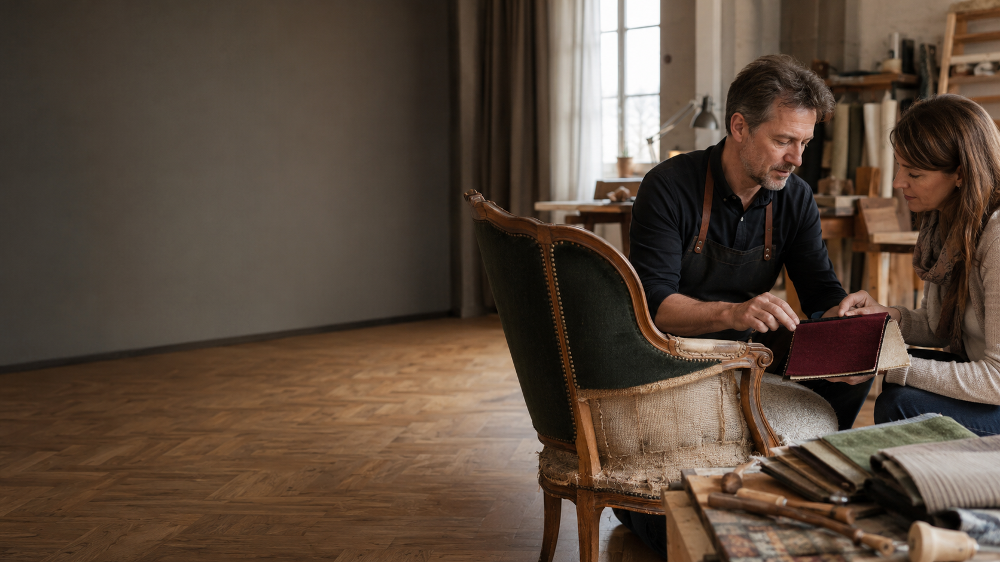

Räume. Möbel. Handwerk mit Bestand.
Raumausstattung, Polsterei und Bodenkompetenz aus Konstanz – von der Gardine bis zur gewerblichen Bodensanierung, alles aus einer Werkstatt.
Eine Werkstatt für alles, was erhalten werden soll
Der zentrale USP: die ungewöhnlich breite Verbindung aus gestalterischer Raumausstattung, traditioneller Polster- und Sattlerarbeit sowie technisch anspruchsvoller Bodensanierung – für private Wohnräume, Einzelstücke und komplexe Gewerbeprojekte gleichermaßen.
Wir bewahren und erneuern Räume, Möbel, Fahrzeuge und Böden durch langlebiges Meisterhandwerk, individuelle Materialberatung und technische Lösungen, die weit über den Austausch fertiger Standardprodukte hinausgehen.
Mehr über den Betrieb
Vier Generationen Handwerk, ein Betrieb
Gegründet als Polsterer-, Tapezierer- und Sattlerbetrieb, verbindet Raumausstattung Schiefer bis heute traditionelle Handarbeit mit moderner Boden- und Sanierungstechnik.
- 1936Gründung als Polsterer-, Tapezierer- und Sattlerbetrieb in Konstanz.
- Bis heuteFamilien- und Meisterbetrieb, geführt von Matthias Schiefer.
- ErweiterungParkett, Designbodenbeläge und technisch anspruchsvolle Bodensanierung ergänzen das Leistungsspektrum.
- HeuteVier klare Leistungswege für Privat- und Gewerbekundschaft in der Bodenseeregion.
Vier Wege, ein Anspruch: Handwerk mit Bestand
Ob Wohnraum, Boden, Möbelstück oder Fahrzeug – wählen Sie Ihren Einstieg und wir sprechen konkret über Ihr Projekt.

Raumgestaltung
Gardinen, Sicht- und Sonnenschutz, Wandgestaltung, individuelle Wohnkonzepte.

Parkett & Designböden
Verlegung, Sanierung, Oberflächenbehandlung – bis hin zu Parkett im Bad.

Möbelpolsterei
Neubezug, Restaurierung und Materialberatung für erhaltenswerte Möbelstücke.

Fahrzeugsattlerei
Sitze, Verdecke, Boote und individuelle Sattlerlösungen.
Ausgewählte Projekte
Ausgangslage, Verfahren, Ergebnis – ein Auszug aus realen Projekten. Die vollständige Übersicht mit Filter finden Sie auf der Referenzen-Seite.

Industriebodensanierung bei laufendem Betrieb
Staubarme Sanierung eines Gewerbebodens ohne Betriebsunterbrechung.
Parkettsanierung nach Wasserschaden
Entfernung alter Kleberreste, Aufarbeitung und farbige Ölsystem-Behandlung.
Restaurierung eines Designer-Sessels
Neubezug mit hochwertigem Möbelstoff unter Erhalt des Originalgestells.
Von der Beratung bis zum fertigen Ergebnis
Anfrage & Erstgespräch
Sie schildern Ihr Anliegen – persönlich, telefonisch oder über das Kontaktformular.
Vor-Ort-Beratung
Begutachtung von Material, Raum oder Boden und gemeinsame Lösungsfindung.
Umsetzung
Fachgerechte Ausführung durch den Meisterbetrieb – im Haus oder direkt vor Ort.
Übergabe
Abnahme, Pflegehinweise und bei Bedarf Nachbetreuung.
FAQ
Bieten Sie auch eine kostenlose Erstberatung an?
Ein erstes telefonisches oder persönliches Gespräch zur Einschätzung Ihres Anliegens ist möglich. Details und Konditionen zur Vor-Ort-Beratung klären wir individuell im Erstkontakt.
Übernehmen Sie auch gewerbliche Bodensanierungen bei laufendem Betrieb?
Ja, staubarme und teils abschnittsweise Sanierungsverfahren ermöglichen Arbeiten bei laufendem Geschäftsbetrieb. Details besprechen wir im Rahmen der gewerblichen Bodensanierung.
Kann ich Fotos meines Möbelstücks oder Bodenschadens vorab einsenden?
Ja, im Kontaktformular steht ein optionales Upload-Feld für Fotos oder Pläne zur Verfügung.
Wie weit ist Ihr Einzugsgebiet?
Unser Schwerpunkt liegt in Konstanz und der Bodenseeregion. Größere Gewerbeprojekte besprechen wir auf Anfrage auch überregional.
Welche Öffnungszeiten hat die Werkstatt?
Termine vereinbaren wir nach individueller Absprache. Verbindliche Öffnungszeiten befinden sich aktuell in Abstimmung – bitte rufen Sie uns an oder nutzen Sie das Kontaktformular.
Beratung anfragen
Ob Wohnraum, Boden, Möbelstück oder Fahrzeug: Schildern Sie uns Ihr Projekt – wir melden uns zeitnah zurück.
Google Maps benötigt einen API-Key. Bitte YOUR_GOOGLE_MAPS_API_KEY in kontakt.html ergänzen.
In Google Maps öffnen